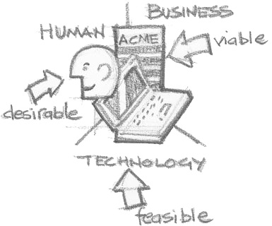

產品概念的發展，就如我之前在《互聯網新世界=思維革命》所說，在互聯網的世代，其實有著翻天覆地的改變。
用戶為皇的年代
受工業革命的啟蒙之下，一直以來工商業的發展，都著重於以系統作為營運的核心思路。組織往往希望將工序規範並細化，務求將產能最大化，成本得以壓縮。這其實某程度來說，是以組織的思考角度出發，以系統為本，把人圍繞系統建構的一套思路。
受工業革命的啟蒙之下，企業或產品均以系統為核心，把人圍繞系統建構的一套思路

就只在十年左右的時間吧，還不是全球經濟一體化，消息的傳遞交流也沒現在那麼有效順暢的年代，市場的需求也傾向比較單一，甚至可透過媒體去創造需求，商品往往在於滿足功能的訴求，因此商品可更粗獷的推出市面，以覆蓋面和數量取勝。
互聯網的出現，很多舊有方法就會過時需要反思，也衍生出不同玩法的可能性。
當然，不能否認，在行業領先的企業現在仍然能主導市場趨勢，甚至更有效利用綱絡效應，為商品作出定義，以規模覆蓋市場。但在這個產能個剩的年代，對於一眾企業來說，卻是面對行業被壟斷，市場空間被擠壓這的嚴峻艱難苦況，在運營上面臨巨大的挑戰。
但同時間，其實市場上也同時𧗠生了一個千載難逢的機遇。一些人開始質疑工業模式的這套規則，革命俏然發生。
這是一個自我的年代，一些人開始質疑工業模式的這套規則，革命俏然發生
這是一個自我的年代，互聯網更容易讓我們通過比較，或人與人之間的交流，更容易的讓我們探索和了解對產品的各種深度需求。因此：
- 市場需求不再單一
- 互聯網有效擴大產品的接觸面，部落效應也變相凝聚了一個個向心力極強的細分市場
- 用戶的胃口也因林羅滿目的商品選擇被吊高了，不單以功能需求為主導，更多是整個體驗的需求
也因此有人在質疑…為什麼需要規模？與其以產品為中心，大規模生產以迎合大眾的普遍需求，何不以用家為本，深度關顧用家的深度需要，做出真真正正用家喜愛的產品，再以這股向心力迅速幅射將市場擴大？
與其以產品為中心，大規模生產規模去迎合大眾的普遍需求，何不以用家為本，做出真真正正用家喜愛的產品
這也造就出近年在市場一個個的神話。也漸漸，企業更趜向重視發掘和理解用戶，重視用戶，重視設計，興起了design thinking的學說 ，也衍生出用戶體驗設計 - user experience design (UED / UX / XD) 這門專業。
從概念到最終成品的法寶
或許，道理大家都懂，但該如何入手，把用戶＋設計為本的精神，開發自己的產品和服務，甚至乎把精神融入到企業的文化當中？
關於設計的理解，可見上週我寫的《程序猿vs設計獅》一文
就我在這個專業內的這一段時間內，試試簡單的總結一下具體的框架，讓大家窺探國外企業怎樣跟創意和設計結合的具體做法吧..
在這之前，不得不先說說Design Thinking這個近幾年竄紅的詞彙和主流概念。
Design Thinking是什麼？
要說仔細的話，Design Thinking可解釋為一套可應用於企業，從探索創新，到概念落實以至設計、執行並持續演進的一套理論框架和法則。由IDEO的紅人Tim Brown提出，其實是將設計的終極意義和思維帶回根本，並將設計的一些原理有效融入到整個企業運作當中。
若非要為Design Thinking定義的話，可看看Tim Brown以下的解釋（抱歉不翻譯以下句子了，怕跟原意會有偏頗)：
The one’s sensibility & methods to match people’s needs with what is technologically feasible & what a viable business strategy can covert into customer value & market opportunity
簡單說，就是結合用戶需求、技術可行性和商業策略這三方面，為用戶提供價值，或轉化為商機。

其實，要是大家有一直關注我每週寫的博客，雖然每個話題都看似離天萬丈不著邊際，但要仔細發現的話，其實不多不少，這個框架對我去重新思考沉澱以往各種知識經驗，形成自己的一套清晰的思路脈絡，幫助很大。
好吧…閒話不說，可能理論對大家都很空泛的吧…或許深入一點，看看整個design thinking所提議的一個框架或方向：
{kind=link}
其實當中的各種方法，都不是重點，原意其實更多只是一個參考，不一定是一個千篇一律的流程模版，因為就算你把所有方法都熟瓜爛熟的照板煮碗，若缺乏設計的思維，那一切只會是流於形式，只是為了做而做而已，沒有任何意義…
那…什麼是設計思維？
說到底，其實就是思考方法的運用。我們除了運用一直在求學和工作上已不停鍛鍊的收斂性思維（Convergent Thinking）外，也需要發散性思維（Divergent Thinking）去幫助尋求創新。前者作用在於分析評估各方案的利弊，幫助聚焦、整合和篩選。但後者卻幫助蘊育創意，運用頭腦風暴(brainstorm)等不同技巧，在沒有任何約束下大膽探索和假設，並同時嚴苛批判著每個假設的可行性或引導啟發出更好的方向。
3個階段，7個部驟
上圖除了將整個框架分為Inspiration（靈感），Ideate（構思）和Implementation（實現）這三個階段外，也有較常的更仔細的分為七個部驟：
- Define（定義）
- Research（調研）
- Ideate
- Prototype（樣版）
- Choose（篩選）
- Implement（實現）
- Learn（檢討學習）
【題外話】其實我不認同圖中把ideate簡單翻譯作「構思」這個字，但暫時也想不到一個更好的翻譯，以我所理解該形容將概念（idea）轉化為更具體的方案或形式的一個過程的意思
除此之外，也有Discover，Define，Develop和Deliver這個說法，其實道理也是相約。
同時間，Design thinking其實也跟Lean和Agile（敏捷）的理論背後也是一脈相承的，也就是在這個不停在變的世界內怎樣透過快速嘗試改進的一種方法態度。
而UX這個行業，也就是因應市場上對用戶越趨重視這個需求，配合以上design thinking提出的大框架所形成的一個嶄新行業吧。下週，我會帶大家嘗試以一個UX的角度，更詳細深入的介紹在用戶體驗上一些常用而重要的方法吧。
| ＜上一篇 | 下一篇＞ |